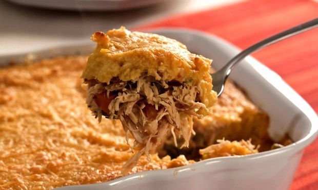

Conteúdo:
 Escrito por
Escrito por
Lucas Craveiro Paes
SobreEu sou Web Designer, e alguns meses eu descobri que eu e a minha família possuímos vários tipos de Intolerâncias e Alergias. Então criei esse mini-site para poder tentar ajudar pessoas na mesma situação que eu.
Escondidinho de Frango (Sem Lactose e Glúten)
Massa
- 300g de Batata Salsa (Mandioquinha, Batata Baroa)
- 2 Colheres de Óleo de Coco
Recheio
- 200g de Frango Desfiado
- 1 Cebola Picada
- 1 Tomate Picado
- Tempero Verde e Sal Rosa a Gosto
- Pimenta a Gosto
- Azeite de Oliva
- 1 Gema
Modo de Preparo
Coloque as batatas para cozinhar (sem casca fica mais fácil). Enquanto isso, prepare o recheio. Coloque o azeite na panela, acrescente a cebola e espere ficar transparente. Em seguida, coloque o frango e os demais ingredientes (exceto a gema) e reserve. Assim que as batatas estiverem cozidas, faça o purê (você pode amassar as batatas, ou então utilizar um processador ou liquidificador) e no fim, adicione o óleo de coco. Cubra o fundo de um refratário (pequeno) com parte do purê. Coloque o recheio e cubra com o restante do purê. Passe a gema por cima e coloque no forno pré aquecido para dourar.
Pão de Chia (Sem Lactose, Glúten e Leveduras)

Ingredientes
- 250g de Mandioca/Aipim Cozida e Amassada
- 250g de Polvilho Doce ou Azedo
- 1/2 Colher de Sopa de Chia
- Sal a Gosto
- 75ml de Azeite
- 1 Colher de Chá de Açafrão
- 1 Colher de Sopa de Orégano
- Água a Gosto
Modo de Preparo
Misture os ingredientes secos em um tigela. Adicione o azeite e misture até virar uma farofinha. Junte o aipim cozido e comece a trabalhar a massa incorporando todos os ingredientes. Coloque água aos poucos somente até a massa começar a soltar das mãos. Modele as bolinhas e distribua em uma assadeira untada. Leve ao forno preaquecido a 200 graus até a casca ficar firme.
Rende 30 porções.
Peixe ao Molho de Leite de Coco (Sem Lactose e Glúten)
Ingredientes
- 6 Filés de Peixe
- 1 Vidro de Leite de Coco
- 1 Tomate Picado
- 2 Dentes de Alho Amassados
- 1/2 Cebola Picada
- Suco de 1/2 Limão
- 1 Cubo de Caldo de Camarão (Dissolvido em 1/2 Xícara de Chá de Água Fervente)
- Sal, Pimenta-do-Reino, Coentro Picado e Azeite a gosto
Modo de Preparo
Unte um refratário de vidro ou um tabuleiro com um pouco de azeite. Coloque os filés de peixe um ao lado do outro. Por cima, espalhe o tomate picado, a cebola picadinha, o alho amassado, o caldo de camarão dissolvido, o suco de limão, a pimenta-do-reino e o sal. Deixe para despejar o leite de coco por último, cobrindo todos os filés. Cubra o tabuleiro com papel-alumínio. Leve para assar em forno preaquecido a 180º C por aproximadamente 20 minutos, ou até que o peixe esteja bem cozido. Sirva quente.
Dica: Para acompanhar o peixe ao molho de leite de coco, você pode fazer arroz branco supersoltinho, purê de batata, farofa de alho, arroz à grega, batatas fritas.
E agora? Só tem isso?
Na verdade não. Essas são algumas dicas mínimas que eu achei interessante compartilhar com vocês, mas se você quiser mais algumas receitas, eu posso te indicar um eBook muito bom com 101 Receitas para pessoas com restrições alimentares e que também ajudam a emagrecer. Se você ficou interessado, clique no botão abaixo para conseguir o seu eBook. Eu sugiro que você adquira ele, porque em condições como a nossa, não podemos ficar escolhendo muito o que vamos comer. Então é melhor manter o leque de opções sempre aberto.
Clique aqui para conseguir seu ebook